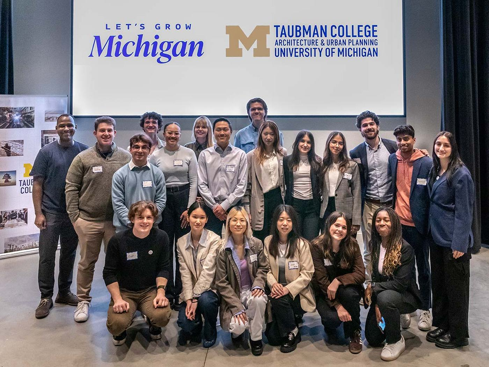

About
Ron Bronson is an assistant professor of practice in Urban Technology at the University of Michigan’s Taubman College of Architecture and Urban Planning, where he has taught since 2024.
All three of his courses come back to public mechanics: how a service behaves for the person on the receiving end.

Research interests
Economic sociology
Critical urbanism
Platform studies
Digital statecraft
Teaching
Courses
- UT 402
- UT 330
- UT 360
- ART 230
Business of Visual Art
Class projects
- 2026
Years Ahead 26
Organizer and panel moderator.
- W26
Access to justice
Students redesigned the self help forms people use to answer an eviction, get back a security deposit, or file a small claim without a lawyer.
- W24
Let’s Grow Michigan
Students worked with the State of Michigan’s population growth office on how the state welcomes new residents, and presented three concepts to local leaders and the state’s growth team at Newlab in Detroit.